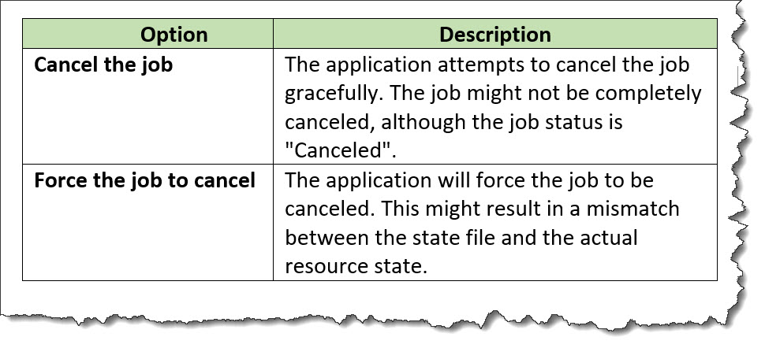
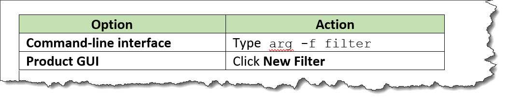

<choicetable>
A choice table provides information about a set of options for completing a step.
Usage information
A choice table provides information when there is more than one way to complete a step. It is a simple table with two columns. The first cell in a row labels the option, and the second cell in the row describes the option that a user can take to complete the step.
An optional header row can provide labels for the columns, if an author does not want to use the default labels that might be provided by stylesheets.
Rendering expectations
If a choice table does not contain a header row, processors typically auto-generate labels for the columns in the choice table. The text for the labels is specified in stylesheets.
Specialization hierarchy
The <choicetable> element is specialized from
<simpletable>. It is defined in the task module.
Content model
<title>
?,
<chhead>
?,
<chrow>
+
Contained by
Contained by
Inheritance
- topic/simpletable task/choicetable
The <choicetable> element is specialized from
<simpletable>
. It is defined in the task module.
Attributes
The following attributes are available on this element: universal attributes, display attributes, and simpletable attributes.
For this element, the @keycol attribute has a default
value of 1.
The following attributes are available on this element: universal attributes and the attributes defined below.
@expanse(display attributes)- Specifies the horizontal placement of the element. The
following values are valid:
- column
- Indicates that the element is aligned with the current column margin.
- page
- Indicates that the element is placed on the left page margin for left-to-right presentation or the right page margin for right-to-left presentation.
- spread
- Indicates that the object is rendered across a multi-page spread. If the output format does not have anything that corresponds to spreads, then spread has the same meaning as page.
- textline
- Indicates that the element is aligned with the left (for left-to-right presentation) or right (for right-to-left presentation) margin of the current text line and takes indentation into account.
- -dita-use-conref-target
- See Using the -dita-use-conref-target value for more information.
For
<table>, in place of the@expanseattribute that is used by other DITA elements, the@pgwideattribute is used in order to conform to the OASIS Exchange Table Model.Some processors or output formats might not support all values.
@frame(display attributes)- Specifies which portion of a border surrounds the element.
The following values are valid:
- all
- Indicates that a line is rendered at the top, bottom, left, and right of the containing element.
- bottom
- Indicates that a line is rendered at the bottom of the containing element.
- none
- Indicates that no lines are rendered.
- sides
- Indicates that a line is rendered at the left and right of the containing element.
- top
- Indicates that a line is rendered at the top of the containing element.
- topbot
- Indicates that a line is rendered at the top and bottom of the containing element.
- -dita-use-conref-target
- See Using the -dita-use-conref-target value for more information.
Some processors or output formats might not support all values.
@keycol(simpletable attributes)- Specifies the column that contains the
content that represents the key to the tabular
structure. If
@keycolis present and assigned a numerical value, the specified column is treated as a vertical header. @relcolwidth(simpletable attributes)- Specifies the width of each column in relationship to the
width of the other columns. The value is a space-separated list
of relative column widths. Each column width is specified as a
positive integer or decimal number followed by an asterisk
character.
For example, the value
relcolwidth="1* 2* 3*"gives a total of 6 units across three columns. The relative widths are 1/6, 2/6, and 3/6 (16.7%, 33.3%, and 50%). Similarly, the valuerelcolwidth="90* 150*"causes relative widths of 90/240 and 150/240 (37.5% and 62.5%). @scale(display attributes)- Specifies the percentage by which fonts are resized in
relation to the normal text size. The value of this attribute
is a positive integer. When used on
<table>or<simpletable>, the following values are valid: 50, 60, 70, 80, 90, 100, 110, 120, 140, 160, 180, 200, and -dita-use-conref-target.This attribute is primarily useful for print-oriented display. Some processors might not support all values.
If the
@scaleattribute is specified on an element that contains an image, the image is not scaled. The image is scaled only if a scaling property is explicitly specified for the<image>element.
Examples
This section is non-normative.
This section contains examples of how the
<choicetable> element can be used.
The following code sample contains a
<choicetable> element that is used to
explain the options that a user can take to cancel a job:
<step>
<cmd>Select the option that you want:</cmd>
<choicetable relcolwidth="1* 2*">
<chrow>
<choption>Cancel job</choption>
<chdesc>The application attempts to cancel the job gracefully.
The job might not be completely canceled, although the job
status is "Canceled".</chdesc>
</chrow>
<chrow>
<choption>Force the job to cancel</choption>
<chdesc>The application will force the job to be canceled. This
might result in a mismatch between the state file and the
actual resource state.</chdesc>
</chrow>
</choicetable>
</step>The choice table might be rendered in the following way. Note that the labels for the columns are contributed by the stylesheets that are used by the processor.

The following code sample contains a
<choicetable> element that contains a
header row. The choice table is used to
provide users with instructions for creating a filter using
either the command line or the graphical user interface. The
header row is used to specify column labels of "Option" and
"Action".
<step>
<cmd>Create a new filter:</cmd>
<choicetable>
<chhead>
<choptionhd>Option</choptionhd>
<chdeschd>Action</chdeschd>
</chhead>
<chrow>
<choption>Command-line interface</choption>
<chdesc>Type <codeph>arg -f filter</codeph></chdesc>
</chrow>
<chrow>
<choption>Product GUI</choption>
<chdesc>Click <uicontrol>New Filter</uicontrol></chdesc>
</chrow>
</choicetable>
</step>The choice table might be rendered in the following way:
